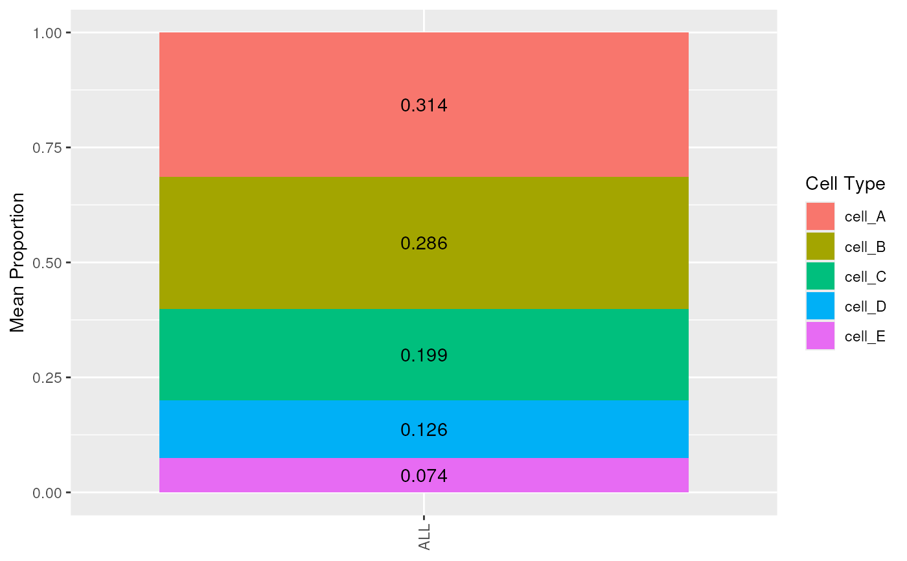
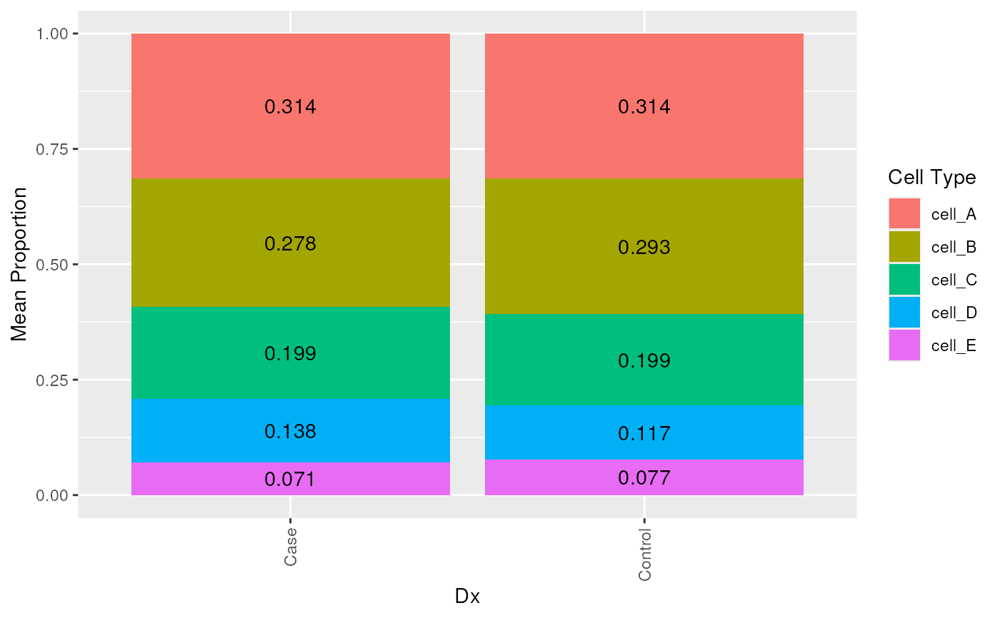
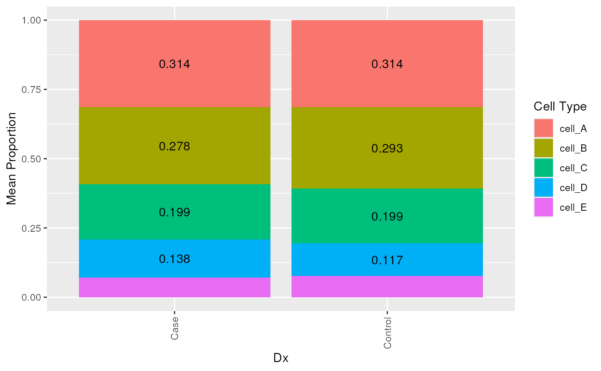
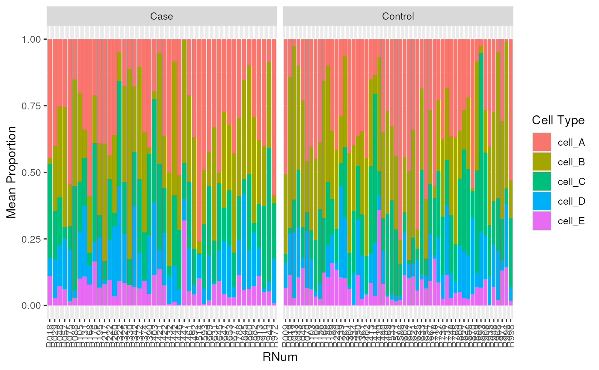

R/plot_composition_bar.R
plot_composition_bar.RdGiven a long formatted data.frame, this function creates a barplot for
the average cell type composition among a set of samples (donors) using
ggplot2.
plot_composition_bar(
prop_long,
sample_col = "RNum",
x_col = "ALL",
prop_col = "prop",
ct_col = "cell_type",
add_text = TRUE,
min_prop_text = 0
)A data.frame of cell type portions in long form
A character(1) specifying the name of column in
prop_long that identifies samples.
A character(1) specifying the name of column in
prop_long that specifies the category to divide samples by.
A character(1) specifying the name of column in
prop_long that contains proportion values.
A character(1) specifying the name of column in
prop_long containing cell type names.
A logical(1) determining whether to add the rounded
proportion value to the bars.
A numeric(1) specifying the minimum proportion to
display text. Values greater than (>) min_prop_text will be displayed.
A stacked barplot ggplot2 object representing the mean proportion
of cell types for each group.
# extract relevant colData from the example RangedSummarizedExperiment object
pd <- SummarizedExperiment::colData(rse_bulk_test) |>
as.data.frame()
# combine with the example estimated proportions in a long style table
est_prop_long <- est_prop |>
tibble::rownames_to_column("RNum") |>
tidyr::pivot_longer(!RNum, names_to = "cell_type", values_to = "prop") |>
dplyr::inner_join(pd |> dplyr::select(RNum, Dx))
#> Joining with `by = join_by(RNum)`
est_prop_long
#> # A tibble: 500 × 4
#> RNum cell_type prop Dx
#> <chr> <chr> <dbl> <chr>
#> 1 R913 cell_A 0.380 Case
#> 2 R913 cell_B 0.240 Case
#> 3 R913 cell_C 0.162 Case
#> 4 R913 cell_D 0.108 Case
#> 5 R913 cell_E 0.111 Case
#> 6 R602 cell_A 0.443 Control
#> 7 R602 cell_B 0.207 Control
#> 8 R602 cell_C 0.0743 Control
#> 9 R602 cell_D 0.160 Control
#> 10 R602 cell_E 0.115 Control
#> # ℹ 490 more rows
# Create composition bar plots
# Mean composition of all samples
plot_composition_bar(est_prop_long)

# Mean composition by Dx
plot_composition_bar(est_prop_long, x_col = "Dx")

# control minimum value of text to add
plot_composition_bar(est_prop_long, x_col = "Dx", min_prop_text = 0.1)

# plot all samples, then facet by Dx
plot_composition_bar(est_prop_long, x_col = "RNum", add_text = FALSE) +
ggplot2::facet_wrap(~Dx, scales = "free_x")
